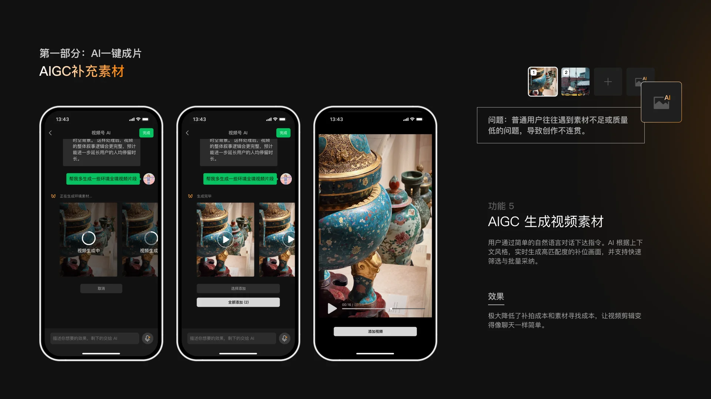

融入现有入口
顺着用户原有的发布与编辑习惯，让 AI 出现在需要帮助的地方。

素材已经有了，想法也有了。
但从相册到一条完整视频，依然隔着许多操作。
本页围绕原提案中的视频号创作体验展开：如何将 AI 融入素材选择、内容构思、视频编辑与表达完善，让创作过程更连贯。
参考 Carol Yu《WeChat Channels × AI》（项目时间：2026 年 3 月）的概念提案。本页为案例内容的网页化整理，设计稿归原作者所有。
顺着用户原有的发布与编辑习惯，让 AI 出现在需要帮助的地方。
协助处理重复的素材整理与基础编辑，为表达留出更多空间。
提供预览与继续编辑的路径，让用户能够判断、修正和完成作品。
从需要一个开始，
到已经有了明确的想法。
选择素材、描述想法，再通过对话完善内容。AI 提供初稿，创作者继续决定视频要表达什么。
在原有剪辑流程中引入 AI：通过文字描述、风格建议与素材处理辅助，让调整更直接，保留熟悉的操作方式。
查看原作者的交互原型与完整案例。
AI 协助启发和执行，内容的想法、情绪与最终判断仍由人决定。
在熟悉的流程里减轻负担，比增加一套复杂的新工具更有价值。
创作目的与内容类型不同，合适的建议也不同。能力要在真实使用场景中继续验证。
设计稿与原型：Carol Yu；本页：网页排版与交互整理。此页面不是微信官方发布，也不代表已上线功能。未将原作者的任职、研究成果或录用经历表述为本人的经历。